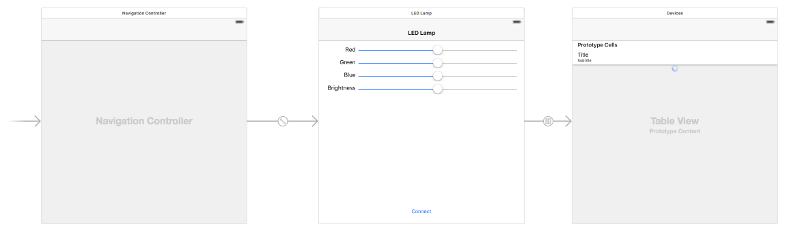

I love the thought of manipulating the outside world with code. This project uses Arduino, Red Bear BLE Shield and iPhone (Swift) to control the color and brightness of a light.
The cuircuit is a straight forward connection to a LED. Not very different from a typical 'Hello World' in electronics, just using a single RGB color mixing LED and not a single color LED. As seen in the diagram below, the Red, Green and Blue pins are connected to PWM output pins on the controller and the common ground runs to the ground on the controller. The controller is then supplied power via a 9V battery (or the USB port can provide power to the controller).
The circuit is set and now we need to teach the controller how / when it should power our various color pins. First, we include the necessary libraries for the BLE shield. Then we define which pin is connected to which color of our RGB LED.
//Import needed libraries #include#include #include #include //Define global constant of which pin is which color to make code more readable const int greenLEDPin = 5; const int redLEDPin = 6; const int blueLEDPin = 3;
Next step is to do the setup, telling the controller of our output pins, giving them initial values and firing up the bluetooth.
void setup() {
// Make a serial connection for debugging when running via computer USB port.
Serial.begin(9600);
//Declare our LED pins as outputs
pinMode(greenLEDPin, OUTPUT);
pinMode(redLEDPin, OUTPUT);
pinMode(blueLEDPin, OUTPUT);
//Set the starting light color to even split RGB, mid level brightness (255 max)
analogWrite(redLEDPin, 127);
analogWrite(greenLEDPin, 127);
analogWrite(blueLEDPin, 127);
// Set your BLE Shield name here, max. length 10
ble_set_name("LEDLamp");
// Init. and start BLE library.
ble_begin();
}
Now that we have the set up it is time to define the Loop, what the controller will be running on repeat as long as it is powered. We set up some debugging to make sure our Bluetooth is connected, and if so we read in the passed values and if the value matches one of our LED pins we will assign the next given value as that pins value.
void loop() {
// put your main code here, to run repeatedly:
if(ble_connected()){
Serial.print(" BLE connected ");
} else {
Serial.print(" [ERROR] BLE NOT connected ");
}
ble_do_events();
//While the bluetooth is connected, read in data of location / value pairing
while(ble_available()){
byte led;
byte val;
if(led = ble_read()){
//read the first number for the led to address, and the second for the value...
val = ble_read();
analogWrite(led, val);
Serial.print(led);
Serial.print(":");
Serial.print(val);
Serial.print("\n");
}
}
}
Time to fire up Xcode and throw together a quick app to control our light. The easiest way is to simply download the Read Bear app on the iTunes store and presto it works. However, I don't learn anything this way so I want to build my own (plus I only need a front end that controls 3 pins, not every pin). This task isn't too daunting thanks to the lovely open source framework provided by Read Bear. Thus the task at hand is making a simple view to connect to the device and a view to set the values I want and use the provided framework to send them to the Bluetooth shield. I decided to put the main controlling screen first and have a ‘connect’ button that will take us to a table view that will list all BLE devices advertising themselves for connection.
Our viewcontroller swift file for the main view...
import UIKit
// Create global instance of BLE framework
let myBLE = BLE()
class ViewController: UIViewController {
//Note the place in the array being sent to the device that correspond to which color
let redPin: Int = 5
let greenPin: Int = 3
let bluePin: Int = 1
var brightness:Float = 0.5
//Declare our labels so we can change their color based on screen brightness.
@IBOutlet weak var redLabel: UILabel!
@IBOutlet weak var greenLabel: UILabel!
@IBOutlet weak var blueLabel: UILabel!
@IBOutlet weak var brightLabel: UILabel!
//Declare our initial array that we will send over and over. [pin 3, value, pin 5, value, pin 6, value, null]
var buf: [UInt8] = [0x03, 0x00, 0x05, 0x00, 0x06, 0x00, 0x00]
//Declare our slider interfaces so we can style them
@IBOutlet weak var redSlider: UISlider!
@IBOutlet weak var greenSlider: UISlider!
@IBOutlet weak var blueSlider: UISlider!
@IBOutlet weak var brightSlider: UISlider!
@IBOutlet weak var connectButton: UIButton!
@IBAction func connectPressed(sender: AnyObject) {
//I did nothing here. There is a segue connection made in the storyboard. A better way might be to use this function to do a scan for devices and only segue if there will be values to show and if not, keep user on screen with error message instead of moving the user to an empty table
}
//Send data whenever a color setting is changed
@IBAction func redChanged(sender: AnyObject) {
writeTheData()
}
@IBAction func greenChanged(sender: AnyObject) {
writeTheData()
}
@IBAction func blueChanged(sender: AnyObject) {
writeTheData()
}
//Send whenever brightness is changed, and also change our label font colors (so no black text on black background when brightness at lowest level
@IBAction func brightChanged(sender: AnyObject) {
self.brightness = brightSlider.value
let labelColor = UIColor(white: CGFloat(1 - brightSlider.value), alpha: 1.0)
redLabel.textColor = labelColor
greenLabel.textColor = labelColor
blueLabel.textColor = labelColor
brightLabel.textColor = labelColor
connectButton.titleLabel?.textColor = labelColor
writeTheData()
}
//calculate the RGB values based on slider value and brightness multiplier. Send the value using the BLE framework. Also, set the background color of the view to that of the sent values
func writeTheData() {
buf[redPin] = UInt8(round(redSlider.value * brightness * 255))
buf[greenPin] = UInt8(round(greenSlider.value * brightness * 255))
buf[bluePin] = UInt8(round(blueSlider.value * brightness * 255))
let dataToSend = NSData.init(bytes: buf, length: 7)
myBLE.write(data: dataToSend)
view.backgroundColor = UIColor(red: CGFloat(redSlider.value * brightness), green: CGFloat(greenSlider.value * brightness), blue: CGFloat(blueSlider.value * brightness), alpha: 1.0)
}
override func viewDidLoad() {
super.viewDidLoad()
//Set the initial values for the sliders
redSlider.value = 0.5
greenSlider.value = 0.5
blueSlider.value = 0.5
//Style the sliders, making their min track values the same as that of the color it is representing
redSlider.minimumTrackTintColor = UIColor.redColor()
greenSlider.minimumTrackTintColor = UIColor.greenColor()
blueSlider.minimumTrackTintColor = UIColor.blueColor()
//Setting the background color to the initial values of our sliders
view.backgroundColor = UIColor(red: 127.0/255.0, green: 127.0/255.0, blue: 127.0/255.0, alpha: 1.0)
myBLE.read()
}
*Don't forget to make the right connections between elements in the storyboard to the code.
Then the simple tableViewController to show all devices advertising bluetooth services and giving us a mechanism to connect to a device.
class scanTableViewController: UITableViewController {
//Show a spinner if still scanning
@IBOutlet weak var mySpinner: UIActivityIndicatorView!
override func viewDidLoad() {
super.viewDidLoad()
//If the table is empty, scan again and show spinner so user knows the phone is still looking
if myBLE.peripherals.count == 0 {
mySpinner.startAnimating()
recheckForBLE()
} else {
//Yea! their is something to connect to, hide the spinner
mySpinner.stopAnimating()
}
}
//If there are no devices found yet, try again
func recheckForBLE() {
while myBLE.peripherals.count == 0 {
NSTimer.scheduledTimerWithTimeInterval(3.0, target: self, selector: #selector(self.refreshTable), userInfo: nil, repeats: false)
}
mySpinner.stopAnimating()
}
//Refresh the table if devices finally found
func refreshTable() {
self.tableView.reloadData()
}
override func didReceiveMemoryWarning() {
super.didReceiveMemoryWarning()
}
// MARK: - Table view data source
override func numberOfSectionsInTableView(tableView: UITableView) -> Int {
// Only one section needed for our simple table
return 1
}
override func tableView(tableView: UITableView, numberOfRowsInSection section: Int) -> Int {
//Show however many devices the framework detects
return myBLE.peripherals.count
}
override func tableView(tableView: UITableView, cellForRowAtIndexPath indexPath: NSIndexPath) -> UITableViewCell {
let cell = tableView.dequeueReusableCellWithIdentifier("cell", forIndexPath: indexPath)
//Show the human readable device name as main text and as a sub text show the UUID just because
cell.textLabel?.text = myBLE.peripherals[indexPath.row].name
cell.detailTextLabel?.text = "\(myBLE.peripherals[indexPath.row].identifier)"
return cell
}
//On selection connect to the device
override func tableView(tableView: UITableView, didSelectRowAtIndexPath indexPath: NSIndexPath) {
myBLE.connectToPeripheral(myBLE.peripherals[indexPath.row])
}
}
That is it. Build the app and deploy to device (make sure bluetooth is on for the phone).
To soften the light I did some advanced hardward packaging (I put a tupperware container over top of it). The opaque casing helps soften and distribute the light. The light off to the side is the 'on' light for the BLE shield. Sorry for the poor videography, I'm not too good at recording with one hand and using an App with the other :).